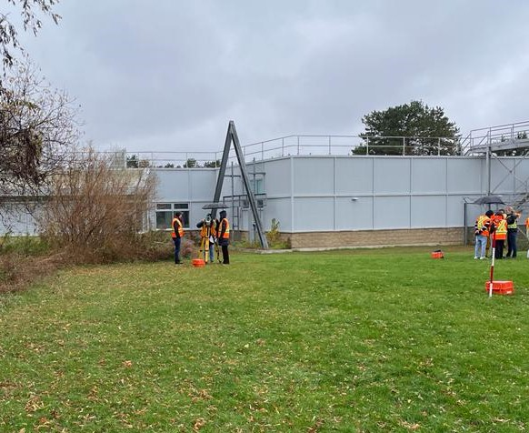
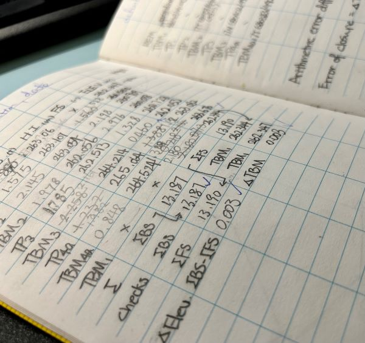
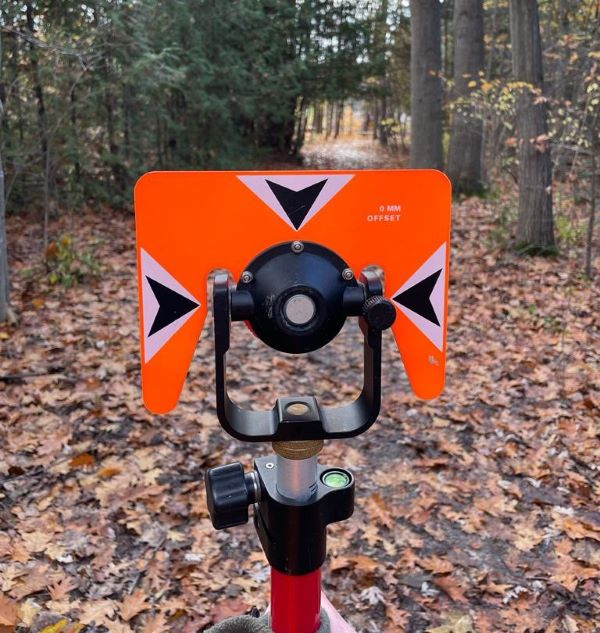
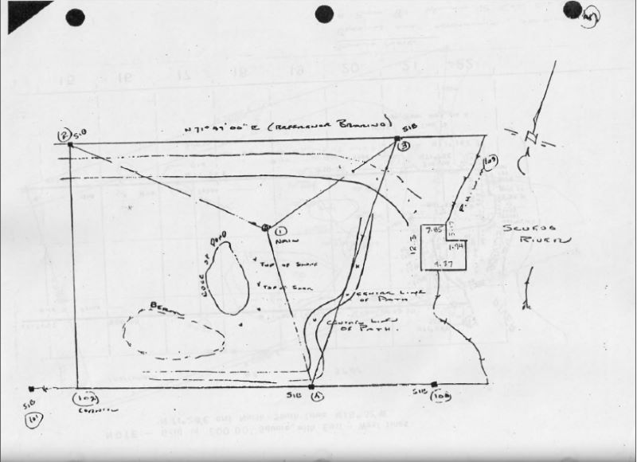

Total Station Surveying
Curious about how to precisely map an area? Enter the total station!
It's a singular tool that combines the capabilities of electronic theodolites and distance measurement, enabling surveyors to meticulously measure angles, distances, and coordinates with unparalleled accuracy in the field. Beyond capturing precise horizontal and vertical angles, it's the catalyst for crafting detailed maps, precise boundary delineation, efficient construction layouts, and so much more.
Our hardworking colleagues excel at working in diverse weather conditions.

Adjusting the diopter ring to target the crosshairs
Levelling
How to ensure precision in the vertical dimension? We mastered the leveling technique!
Leveling is a fundamental surveying technique employed to determine height differentials and establish precise elevations across diverse terrains and structures. Surveyors measure vertical distances and ensure uniformity and accuracy in construction, infrastructure development, and land grading projects. This method aids in creating a foundation of stability, ensuring structural integrity, and enabling the seamless alignment of various elements within the built environment.
Here's a peek at field notes from our adept surveyor, collecting data on angles, distance, and elevation in the backyard of Fleming College.
 Traverse Adjustment and Mapping
Digitization and Visualization of Field Notes
Digitizing hand-drawn survey plans involves the transformation of analog field notes into digital formats using specialized software. This process recreates the intricate details and measurements recorded on paper or in notebooks, converting them into digital representations. By employing advanced tools and techniques, we seamlessly translate hand-drawn sketches, annotations, and measurements into accurate and editable electronic files. This digitization not only preserves the original data but also enhances accessibility, allowing for easier sharing, manipulation, and integration into modern mapping and design software for further analysis or presentation.
